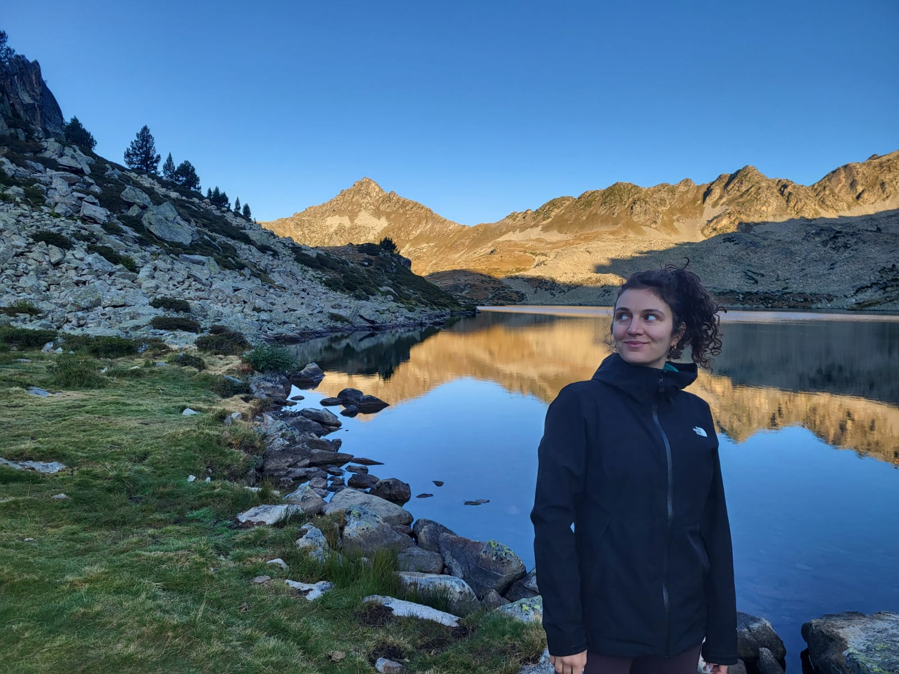

Lucile Génin
A placeholder description for your novel. Add a short, compelling blurb here — two or three sentences that capture the mood, the world, and what makes this story unforgettable.
Read more & buy →A placeholder description for your screenplay. Describe the premise, the emotional core, or where it's been screened — whatever gives readers a reason to want to know more.
Read more & view →This is where your bio goes. Share a little about who you are — where you're from, what draws you to fiction and screenwriting, and what themes tend to find their way into your work.
A second paragraph might touch on your background, influences, or creative process. Keep it warm and personal — readers want to feel like they're getting to know you, not reading a press release.
You can also mention awards, publications, festival selections, or any other milestones that feel meaningful to share.
Whether you're a reader, a fellow writer, or a potential collaborator — I'd love to hear from you.